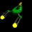
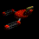
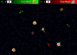
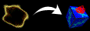
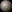
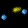

Spiked 2.1, 1997 Chuck Groom
Return to the Spiked Page
Copyright 1997 Charles E. Groom. Sprite Animation Toolkit 2.3 by Ingemar Ragnemalm. All Rights Reserved.
E-mail comments, questions, and feedback to cgroom1@swarthmore.edu
Welcome to Spiked 2.1! This document is divided into the following sections:
Spiked News
- May 20, 1997: Spiked 2.0b turned in for my CS class
- June 23, 1997: Spiked 2.0 Released
- Sept. 21, 1997: Spiked 2.1 Released
Spiked 2.1 fixes the following bugs that plagued Spiked 2.0:
- After a match, Spiked occasionally froze with a black screen
- During a game, Spiked would just up and quit
- If you didn't include the "Spiked Physics" file, then game play was... erratic...
Spiked 2.1 features:
- New graphics. The "About Spiked" and "Spiked Prefs" backdrops are prettier and easier to read
- Spiked 2.1 will play when the monitor is set to 256, thousands, or millions of colors
- New item, the Rockyspiker, turns a rock into a rockyspike
- Improved player navigational control
Why you are reading this
Let's be honest. Nobody reads "About..." documents unless they have to. So, I assume that you are reading this because
- you want to decide whether or not to trash "Spiked 2.1", or
- you tried to play "Spiked" and are confused, or
- you want to know whether or not you can distribute Spiked freely.
Well, the answer to #1 is simple: Spiked 2.1 is a kick-butt two-player arcade game with graphics that rule and game play that rocks your world. You can find the answer to question #2 further down this document. And the quick answer to #3 is that Spiked 2.1 is freeware (but read the section "About Use, and Legalities").
About Use, and Legalities
Spiked 2.1 is freeware. You may copy and/or distribute this software as you like, as long as this "About Spiked" document is included, but you may not distribute modified copies and you may not charge a fee for the software or the distribution except by the written permission of Charles E. Groom.
The program is delivered "as is." Charles Groom doesn’t take any responsibility for damage, loss of data etc. that may occur from using it. Charles Groom provides no warranty of any kind, expressed or implied, concerning this software, including but not limited to fitness for a particular purpose. Charles Groom shall not be liable for any damages of any kind resulting from the use of this software.
Game Play


Spiked 2.1 is a two-player arcade game of cunning, physics, and brute force. One player pilots a green ship, the other player a red ship. There is a horrible, nasty spike that floats around the screen (hence the name of the game, eh?) The only way to die is to touch the horribly, nasty spike. The game follows the gladiator paradigm: the player who walks away alive, wins. So, spike your opponent and achieve victory. Each player starts with three lives. A match lasts between 1-5 minutes, about the attention span of your average computer game player.
 The game plays in a straightforward fashion. The players, the spike, and other items are dumped into a closed arena. Everything interacts with everything else according to the laws of physics. If you bump into your opponent, he/she WILL fly backwards. You can even move the spike if you shove it hard enough (of course, it has 200 times the mass of a player, so it can take a while to build up its momentum). A simple strategy would be to get your opponent between you and the spike, and then you accelerate towards your opponent to shove him/her into the spike. Unfortunately, your clever opponent will probably just move and you will find yourself kissing the spike, which is bad for your health.
The game plays in a straightforward fashion. The players, the spike, and other items are dumped into a closed arena. Everything interacts with everything else according to the laws of physics. If you bump into your opponent, he/she WILL fly backwards. You can even move the spike if you shove it hard enough (of course, it has 200 times the mass of a player, so it can take a while to build up its momentum). A simple strategy would be to get your opponent between you and the spike, and then you accelerate towards your opponent to shove him/her into the spike. Unfortunately, your clever opponent will probably just move and you will find yourself kissing the spike, which is bad for your health.

An image of the screen during game play.
Load full image (60 K) || Full image with explanations (75 K)
Lots of other things float about the arena. Rocks are massive and basically just get in the way. Ram them to move them. Once in a while, a rift in space opens and deposits either a new rock or a gift.

Gifts make Spiked interesting. These little packets ‘o goodness just float around, waiting to be picked up before they either blow up or are pushed off the edge of the screen. Inside the gift you will find a useful item which can be used to either attack your opponent or get yourself out of a scrape.
Computer Requirements
- 640x480 or larger 256, thousands, or millions of colors display
- 68030 or better processor (100+ MHz PPC advised)
- 3.5 Mb RAM for 256 color game play, 4.5 Mb RAM for thousands or millions of colors
- The Spiked 2.1 folder must contain the files “Spiked 2.0,” “spiked.dat,” “spiked.prefs,” “Spiked Physics,” and this file, “About Spiked.”
Items
At the top of the screen, you will find an icon representing your ship's currently selected item. The default item is bullets. At any time, you can press your specified "Use Item" key to either shoot or invoke that item. Or, if you have other items in your inventory, you can cycle through your items to select the item you wish to use. It is always a good idea to build up a small arsenal of items which you use to hunt down and eliminate your opponent or to save your own sorry skin. The items are:
- Bullets. Each ship is equipped with a small cannon that shoots bullets a short distance. You have infinite bullets, but all they do is push things out of the way. Bullets also destroy gifts, and rocks if you hit 'em enough.
- Cannonball.  This item is really cool. It moves very quickly and shoves things aside. Try blasting your opponent into a spike with one of these! Cannonballs are also a great way to eliminate annoying rocks.
- Twister. This nasty item prevents whatever object it hits from accelerating. When you hit your opponent with a twister, a energy field clogs their engines, leaving them helpless . Take advantage of them and gently nudge them into a spike. Another use of twisters is to stop gifts which would otherwise float away.
- Gravitron.  Be careful with this toy. You shoot forth a tremendous “lasso” that drags whatever it hits towards you. This can be really cool if you attach the gravitron to your opponent so that they are dragged into a spike. Of course, if you attach a gravitron to a spike, then the spike will start chasing you and you will probably die. Pity.
- Speeder. When you invoke a speeder, you rocket forward in whatever direction you are pointed. This provides you with a way to hammer your opponent or to escape.
- Rockyspiker. If this hits a rock then the rock turns into a rockyspike; or, if it hits a rockyspike, the rockyspike turns back into a rock. A rockyspike is like a spike in that it kills things, but is has far less mass and the rockyspike will blow up if it hits the real spike.
- A new life. You don't use this gift. You just pick it up. I've noticed that people are more than willing to die to pick up a new life, which seems rather odd...
Controls and Navigation
At any time, you can quit the game by using the "File" menu or pressing command + q. If you are in the middle of a match and want to end it, choose "End Game" from the "File" menu, or press command + e. If you need to pause a game, choose "Freeze Game" from the "File" menu, or press command + f.
Each player may turn left, turn right, apply thrust, use an item, or cycle through their items. To customize these settings, go to the "Prefs" screen, and putz with things. Your changes are then stored in the "spiked.prefs" file. The default settings are:
Green player:
Left: a
Right: d
Thrust: w
Use Item: s
Change Item: q
Red player:
Left: j
Right: l
Thrust: i
Use Item: k
Change Item: u
Physics
You don't need to know this. But if you want to kick butt or are curious about how I programmed this, you should understand the abstractions and physics which I used to program the way in which objects in Spiked interact with one another.
- Every object (e.g., player, rock, spike) is a disk with its own mass and velocity.
- No two items may exist in the same place at the same time. If an unavoidable situation occurs, such as three objects colliding at the same time in the corner of the screen, then to avoid having the program puke, I issue each of the offending objects a "traffic ticket" that prevents it from colliding with the other objects in the region until the problem is resolved.
- Should two items try to coexist in the same location, they will interact and either collide or blow up.
- All collisions are inelastic (no energy is lost). To determine the resulting velocities of two objects which collide, I solve the equations E = .5mv^2 and mv(initial) = mv(final).
- When a player applies thrust, he/she accelerates in the direction opposite the engines.
- All objects have a maximum allowed velocity and a preferred "coasting" velocity. A non-accelerating object going faster than its "coasting" velocity will be slowed down to its coasting velocity. This prevents the game from degenerating into a pinball game.
- A player's acceleration is not linear. If a player is moving slowly or is slowing down, they have a giant acceleration; if they are moving quickly then their acceleration is quite wimpy. This is a subtle effect but it improves game play and helps starting players learn to control their ships.
- Whenever a player dies, the spike's speed is set to zero. This looks strange, but it makes the games more stable since players don’t die from runaway spikes more than once.
- The rate at which rifts open is inversely proportional the number of sprites on screen. If you want more gifts blow up some rocks.
Customizing the Settings
AT YOUR OWN PERIL you may change the basic physical constants that determine how different objects interact with each other. These constants include objects’ masses, maximum velocities, game speed, and the rates at which rifts will open. Open the file "Spiked Physics" with any text editor, read the comments at the bottom, and change the numbers accordingly. Please don’t distribute copies of Spiked with your modified physics settings!
Spiked History
Spiked v1.0 was my first game. I was -- and still am -- proud that I taught myself to program by developing that game. However, it has many flaws. For two years or so, I ignored Spiked and turned my focus on bigger and more complex projects. This last spring, my Computer Science 35 class at Swarthmore College (taught by Prof. Lisa Meeden) assigned a final project which was to write a large program using C++. I decided to re-make Spiked in the way that I’d originally envisioned it. How much resemblance is there between this version and the previous version? Well, the spike idea is the same...
So I wrote Spiked 2.0. It is based on a spiffy abstract class hierarchy. I implemented a true OOP scheme for sprite creation and management, wrote my own event processor classes, and made the physics as accurate as possible. This was done so that I could use this code in future projects. I released Spiked 2.0 in July 1997.
Alack, this program had several bugs and I wasn't happy with it. v2.0 crashes every so often between matches, crashes randomly when you play the game, the graphics are a little off, items aren't implemented properly, and my friends wanted more spikes on the screen. So, I created the rockyspiker, hunted down bugs and squashed them like so many termites under a boot, re-drew a lot of the graphics, and did a lot of behind-the-scenes code cleanup. I then enlisted my Swarthmore friends to beta test for me (thanks, guys!!!) and, finally, released Spiked 2.1. If you have other ideas for neat things to add to the game, please e-mail me. But don't ask for a computer player to play against. I haven't taken any AI classes, and I don't have the time to program a smart player.
Spiked is programmed in C++ compiled by Metrowerks CodeWarrior 9.0. I relied on Ingemar Ragnemalm’s Sprite Animation Toolkit to handle the nitty-gritty sprite drawing routines, and Matt Slot's Gamma Fade Utility to fade the screen in and out (if you are running in 256 colors). I created the graphics on Adobe Photoshop 3.0 and 4.0, and Specular Infini-D.
It is tricky to program on a Macintosh. I often had to look at other people’s source code to understand how to interact with the OS in a way that wouldn’t kill me. Thus, I think it is only fair that I offer most of my source code for public perusal on this site.
All this programming was powered by caffeine, that most glorious of chemicals. I ingested a few hundred cups of coffee and liters upon countless liters of Mountain Dew. In addition, my programming sidekick, Josie the Pet Rat, was with me the entire time and offered invaluable moral support. Thanks, Josie!
In addition, I would like to thank all my beta testers who offered their support and ideas. Josh, Scott, Fafa, Nati, Wayne, Greg, Tannia, Daniel, Cherie, and many others, thank you!
A Plea
I distributed Spiked 2.1 as freeware because I believe in free fun. However, I am your typical starving college student, and writing these programs costs money in terms of hours not spent working, coffee, and Mountain Dew (nuclear yellow drink of life!). Please pander to my ego by e-mailing me comments (cgroom1@swarthmore.edu). Even better yet, help subsidize future programs by sending a small contribution to this poor student. Or send me a postcard and tell me where you're from. :)
Charles Groom
Swarthmore College
500 College Ave.
Swarthmore, PA 19081
United States
Thanks a lot for playing Spiked and reading this!